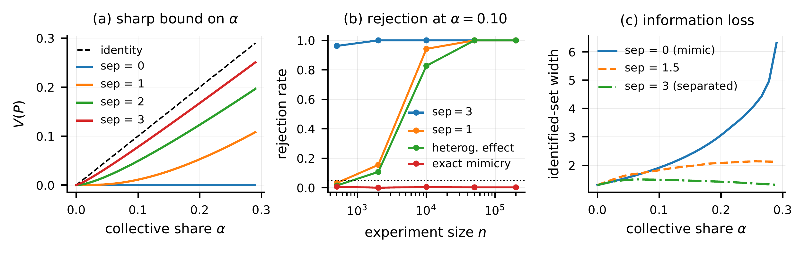
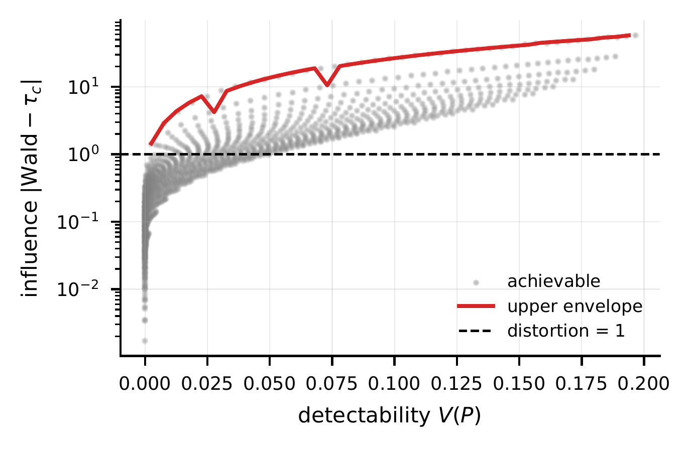

An observable lower bound
Distributional violations reveal a minimum defier share. Interpreting that share as coordination requires the paper’s recruitment assumptions.
Department of Economics, University of North Carolina at Chapel Hill
What can an experiment reveal when users do the opposite of its encouragement?
Can a platform experiment detect coordinated users who invert a randomized encouragement? Such users are defiers in the local average treatment effect (LATE) framework and can distort the instrumental-variables (Wald) estimate used for a launch decision. Under random assignment and exclusion, the observable violation functional V(P) sharply lower-bounds defier mass. We restate this known bound, give a self-contained proof, and examine its interpretation as an audit of collective action.
The audit has no population violation exactly when defier potential-outcome measures are dominated by complier measures. With a positive first stage, exact mimicry is undetectable and leaves Wald equal to LATE. By contrast, a near-mimicry example with 29% defiers has a complier effect of 1.0 and Wald estimand −0.45, with V(P) = 0.0022. Simulations illustrate sensitivity to outcome laws, participation, and exclusion. The audit detects violations of joint identifying assumptions; interpreting them as coordination requires additional behavioral restrictions.
A known identification bound provides a lens on coordinated defiance in platform experiments.
Let mdz(B) = Pr(Y ∈ B, D = d | Z = z) describe the observed outcome and adoption distributions. Exclusion means that encouragement affects the outcome only through take-up. The signed differences S1 = m10 − m11 and S0 = m01 − m00 measure departures from the inequalities implied by monotonicity.
Under random assignment and exclusion, V(P) is the sharp lower bound on defier mass: at least this share must be defiers, and a compatible model attains the bound.
The identification bound is established in prior work by Richardson & Robins (2010), Noack (2021), and Kédagni, Wu & Cui (2025). This paper develops its audit interpretation and examines its limitations.
Distributional violations reveal a minimum defier share. Interpreting that share as coordination requires the paper’s recruitment assumptions.
Measure domination can conceal heterogeneous effects and sign reversals. Exact mimicry itself leaves Wald unchanged when the first stage is nonzero.
Rejection challenges the joint assumptions. It does not establish coordination, and a plug-in estimate is not a confidence bound.
Outcome separation, collective size, and sample size jointly shape what the audit can reveal.

Figure 1. Population violations, rejection rates, and identification uncertainty. Rejection rates use 400 replications, with Monte Carlo standard errors at most 0.025. Panel (c) concerns the LATE for midpoint-coded outcomes.
View full-resolution figure ↗The same 10% defier share can produce a visible violation or a hidden reversal of the causal sign.
The observed population distribution requires at least 3% defiers, although the generating share is 10%. The additional seven percentage points are not required to rationalize the data.
Complier success probabilities: (0.4, 0.2). Defier success probabilities: (0.4, 0.9), listed for untreated and treated outcomes. Appendix B.
Both examples use 30% compliers, 10% defiers, 25% always-takers, and 35% never-takers. First stage: 0.20. All quantities are population values in specified synthetic models.
A Gaussian near-mimicry design with 29% defiers has a complier effect of +1.00 but a Wald estimand of −0.45, while V(P) ≈ 0.0022.
The first stage is 0.01, amplifying effect heterogeneity. Statistical instrument strength also depends on sampling precision. The plot shows achievable violation–distortion pairs within the simulated family.

The study is theoretical and simulation-based. The finite-partition test uses an asymptotic Gaussian approximation; it is not an exact finite-sample guarantee. Exclusion failures can also cause rejection. The paper does not identify coordination from defiance, estimate a strategic equilibrium, or validate an operational platform intervention.
The complete manuscript, experiment code, and editable LaTeX source.
Four-page main text, proofs, worked examples, robustness experiments, and the research checklist.
Open PDF ↗Python scripts, saved results, dependencies, and 13 scientific regression tests. CPU-only simulations.
Download code ↓LaTeX manuscript, bibliography, tables, figures, and the NeurIPS style file.
Download LaTeX ↓Extract the code archive, install the listed dependencies, and run the following commands. No external data, API keys, or GPU are required.
python3 -m pip install -r code/requirements.txt
cd code
python3 -m unittest -v test_audit.py
python3 run_experiments.py
python3 robustness.pyFull runs use 400 replications and 1,000 Gaussian calibration draws. The accompanying README documents the estimands and reproduction steps.
@misc{cui2026instrumentvalidity,
author = {Cui, Yi},
title = {Instrument Validity as an Audit for
Algorithmic Collective Action},
year = {2026},
note = {Accepted at the Economics for Machine Learning
(EconML) Workshop at NeurIPS 2026}
}Economics for Machine Learning (EconML) Workshop at NeurIPS 2026.